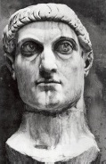

Hıristiyanlık ilk zamanlarında küçük bir tarikat iken, devasa Roma İmparatorluğu genelinde acımasız zulümlere uğramıştır. İmparator Neron MS 64’te, İsa’nın Kudüs’te ölümünden sadece otuz yıl kadar sonra, Roma’daki Hıristiyanlara işkence edilmesini ilk kez resmen emretmiştir. Romalı tarihçi Tacitus, dengesiz zorba Neron’un emriyle bazı inananların köpeklere yem edilerek zalimce infaz edildiğini anlatmıştır. Tacitus, “Ölümleri bile eğlence konusu haline getirilmişti,” diye yazmıştır.

Romalı devlet adamları Hıristiyanlığı imparatorluğun güvenliği için bir tehdit olarak görmüşlerdir, çünkü Hıristiyanlar Romalılar tarafından çarmıha gerilen bir suçluya tapmış ve imparatorla pagan tanrıların tanrısallığını reddetmişlerdir. Hıristiyanlık dini yayıldıkça işkencelerin boyutu da iki yüzyıl boyunca ara ara artmıştır. Ancak Hıristiyanlık başlangıçta genel olarak fakir halkın inanışıyken, ortalama hayatlar süren Romalıları da zamanla kendisine çekmeye başlamıştır.
İmparator Konstantin (275-337), bir hayal görüp de Hıristiyanlığa geçtikten sonra, MS 313’te Milano Fermanı’nı çıkarmış ve Hıristiyanlığı imparatorluk genelinde yasallaştırmıştır. O zamandan itibaren Hıristiyanlık inancı yayılmıştır. Hatta fermandan birkaç nesil sonra Roma İmparatorluğu’nun resmi dini olarak paganizmin yerini almıştır. Dört yüz yıl içinde, birkaç hoşnutsuz Yahudi’nin benimsediği yasadışı bir inanç olmaktan çıkarak bir imparatorluk dinine dönüşmüştür. Roma İmparatorluğu MS V. yüzyılda yıkılmıştır ama Hıristiyanlık Avrupa’da yayılmaya devam ederek kıtaya birlik getiren bir inanç olmuştur.
Roma Katolik Kilisesi’nin merkezi halen Vatikan Şehri’nde, bir zamanlar Hıristiyanların aslanlara yem edildiği amfitiyatronun kalıntılarından yalnızca birkaç sokak ötesinde bulunmaktadır.
EK BİLGİLER:
1. Konstantin’in Hıristiyan olması, kendi ailesinden birçok kimsenin de aralarında bulunduğu siyasi düşmanlarının çoğunu öldürmekten onu alıkoymamıştır. Konstantin otuz bir yıllık hükümdarlığı boyunca kaynını, ikinci eşini ve en büyük oğlunu öldürtmüştür.
2. Roma’dan çok sıkılan ve bu şehrin imparatorluğu için uygun bir başkent olmadığını düşünen Konstantin, Avrupa’nın Asya ile buluştuğu yerde, Hellespont’ta bir şehir kurmuştur. Şehir ilk başta Yeni Roma olarak adlandırılmış, ama sonraları imparatorun şerefine Konstantinopolis olarak anılır olmuştur. Şimdiyse modern Türkiye’nin en büyük şehri olan İstanbul olarak bilinmektedir.
3. İmparator Konstantin, Romalıların asırlarca hayranlıkla takip ettiği gladyatör dövüşlerini kaldırtmıştır. Yine de dövüşler yasadışı olarak bir süre daha devam etmiştir.